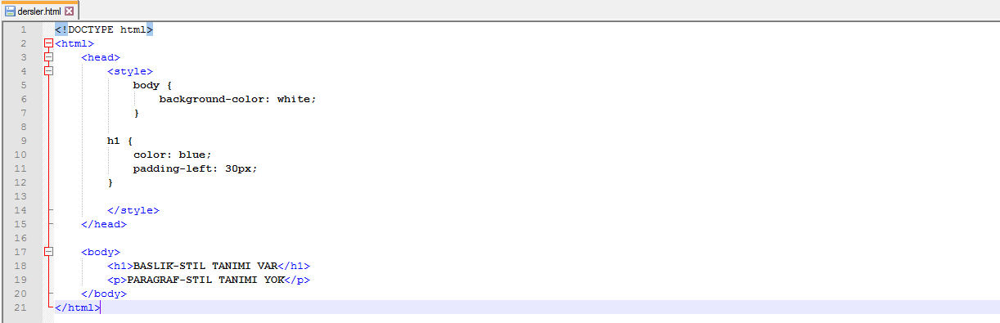

CSS Kodlarını Ekleme Yöntemleri
Bir biçim (style) sayfasını eklemenin üç farklı yolu mevcuttur: Dış stil sayfası (External Style Sheet), İç stil sayfası (Internal Style Sheet), Çevrimiçi (Inline) stil.
Dış Stil Sayfası
Stil çok sayıda sayfaya uygulanacaksa, dış stil sayfası kullanmak uygun bir yöntemdir. Dış stil sayfasıyla, bütün web sayfasının görünümünü sadece bir tek dosyayla oynayarak gerçekleştirebilirsiniz. Her sayfa, &link& etiketiyle, stil sayfasına gönderen bir bağlantı içermelidir; <link> etiketi head bölümünün içinde olmalıdır.
Örneğin = <link> rel="stylesheet" type="text/css" href="style.css" /> kod satırı ile ismi style olan CSS dosyasını web sayfamıza import ettik.
Dış stil sayfası herhangi bir metin düzenleyicisinde (text editor) yazılabilir. CSS dosyası herhangi bir HTML etiketi içermemelidir ve .css uzantısı ile saklanmalıdır.
İç Stil Sayfası
Bir iç stil sayfası, tek bir belgenin kendine özgü tek bir biçimde stil tanımı olacaksa kullanılmalıdır. İç stiller, HTML sayfasının head kısmında yer almalıdır. Burada <style> etiketi içine yerleştirilir.
Inline Stiller
Bu yöntem CSS dosyalarının avantajını ortadan kaldıran bir yöntemdir; içerik ile stil karıştırılır. Bu nedenle kullanılması tavsiye edilmez.
<h1 style="color:red;padding-left:40px;">BASLIK </h1>
Farklı ortamlarda tanımlanan stil özelliklerinin önceliği
Stiller
- Bir HTML5 elemanının içinde,
- Bir HTML5 sayfasının başlığı içinde,
- Bir dış CSS dosyasında tanımlanabilir.
Burada önemli soru şudur: Bir HTML elemanında birden fazla stil tanımlanmışsa hangi stil kullanılacaktır? Bu konuda aşağıdaki sırayı bilmek önemlidir:
- Web tarayıcı varsayılan arama.
- Dış stil sayfası
- İç stil sayfası (head bölümü içinde)
- Inline stil. (HTML elemanı içinde)
Sonuçta, inline stil (HTML elemanı içinde) en yüksek önceliğe sahiptir ve diğerlerinin önüne geçecektir.
@2016 Contact abdullahcelik6@gmail.com